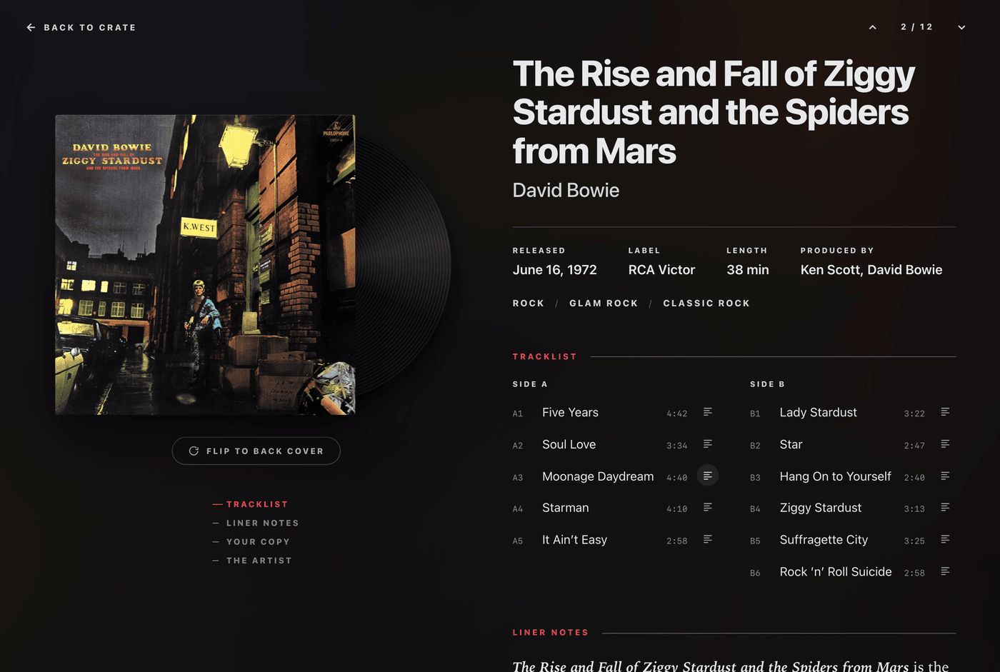
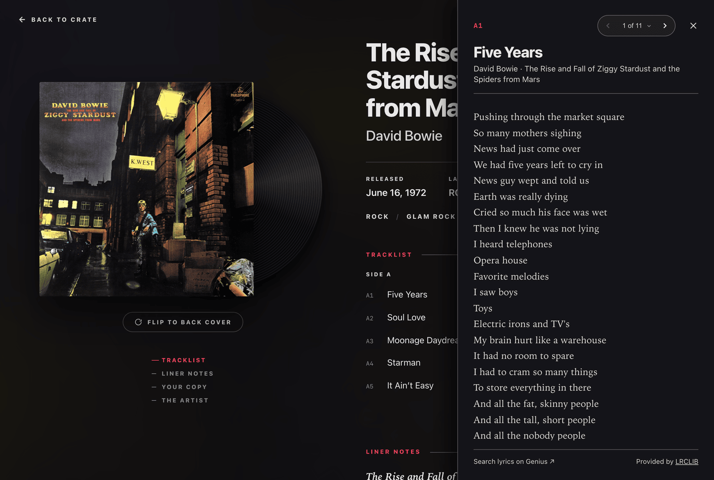

Album Details & Gatefold View
Select any record in your crate to open the gatefold view.
This view displays jacket artwork, vinyl disc styling, tracklists, synced song lyrics, musician credits, liner notes, and your collection details.

Flipping the Sleeve
When rear cover art is available, click the sleeve or the Flip to back cover button to view the back cover.
Vinyl Disc Styles
An interactive vinyl disc peeks from the right edge of the jacket. Spindex parses format descriptions from your Discogs pressing data to render disc styles:
- Color Vinyl: Solid colors including red, blue, green, yellow, white, and orange.
- Translucent & Clear: Semi-transparent discs.
- Splatter & Marble: Swirled and patterned vinyl.
- Picture Discs: Full artwork across the vinyl disc.
- Classic Black: Standard black vinyl.
Tracklists and Synced Lyrics
The tracklist details side and position markers (such as A1, A2, B1) and song durations.
Clicking the lyrics icon next to any song opens a slide-over lyric sheet.

Liner Notes, Credits, and Artist Bios
Spindex automatically enriches your collection by looking up historical context from Wikipedia and Wikidata:
- Liner Notes: Read recording stories, critical reception, and the cultural background of the album.
- Musician Credits: Detailed breakdowns of producers, mixing engineers, vocalists, and session musicians.
- Artist Biography: Portrait imagery, origins, active years, and biographical notes for the performing artist.
- Elsewhere in Your Crate: Quick links to other albums in your collection that feature the same artist or collaborators.
Your Copy Details
The lower section of the right panel displays your personal collection data:
- Condition Grades: Media and sleeve ratings such as Mint, Near Mint, or Very Good Plus.
- Date Added: Date cataloged into your Discogs collection.
- Private Notes: Notes imported from your Discogs account.
- Artwork Fixer: Select alternative cover art if the automatic image match is incorrect.